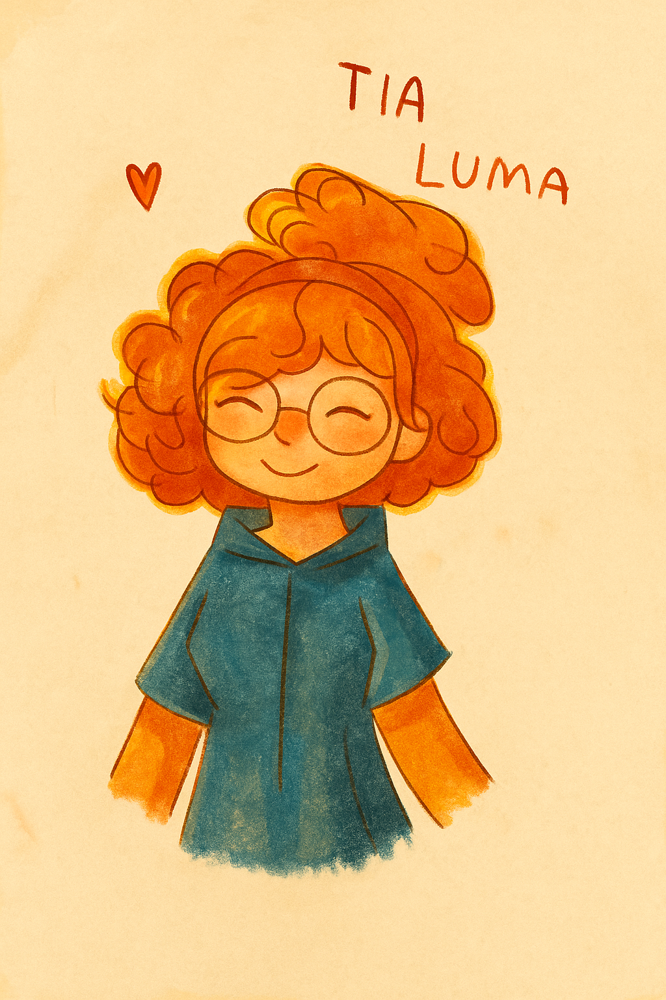

Show dos Transformações
Físicas e Químicas
Iniciar o Show das Transformações!
A ciência é cheia de descobertas —
e cada erro é um passo para acertar!
Show das Transformações Físicas e Químicas
Questão:
1
de
3
| Acertos:
0
Aguardando início...
Pular (1)
Consultar Caderno (1)
Desistir
GOD_MODE (Ver Resposta)
Próxima Questão »
Parabéns, cientista!
Jogar Novamente